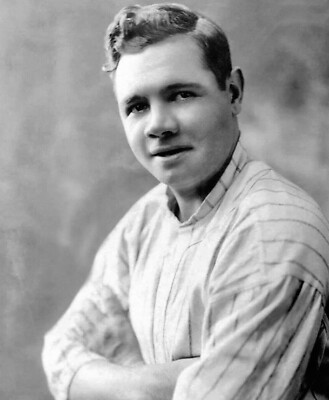
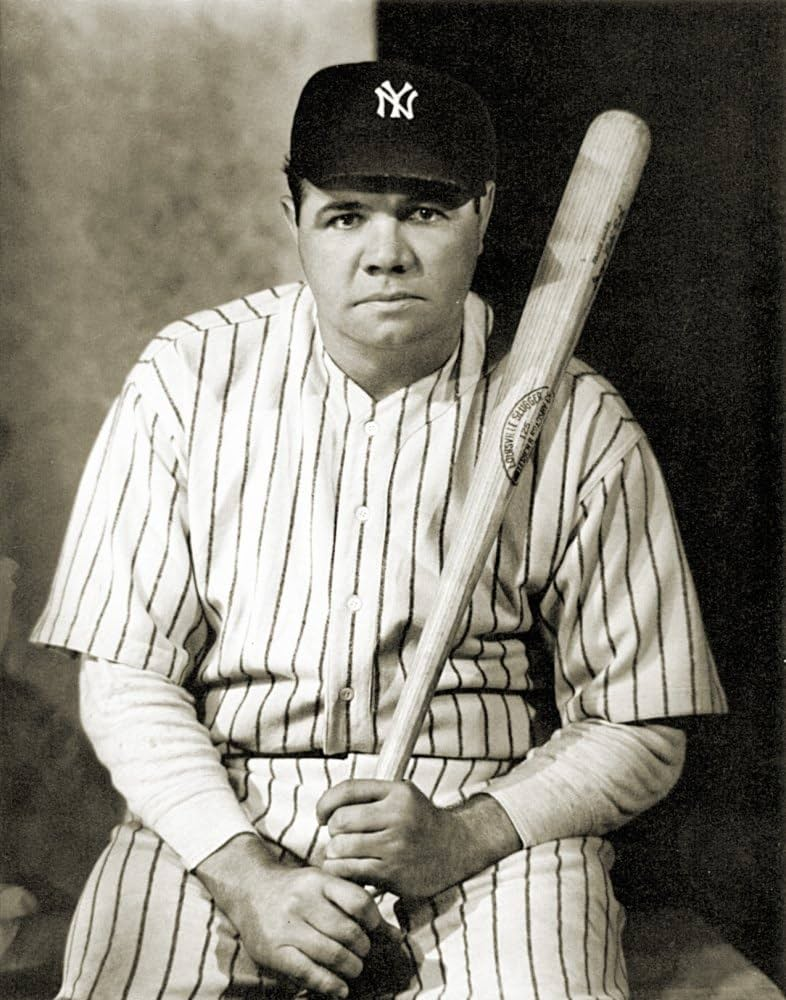
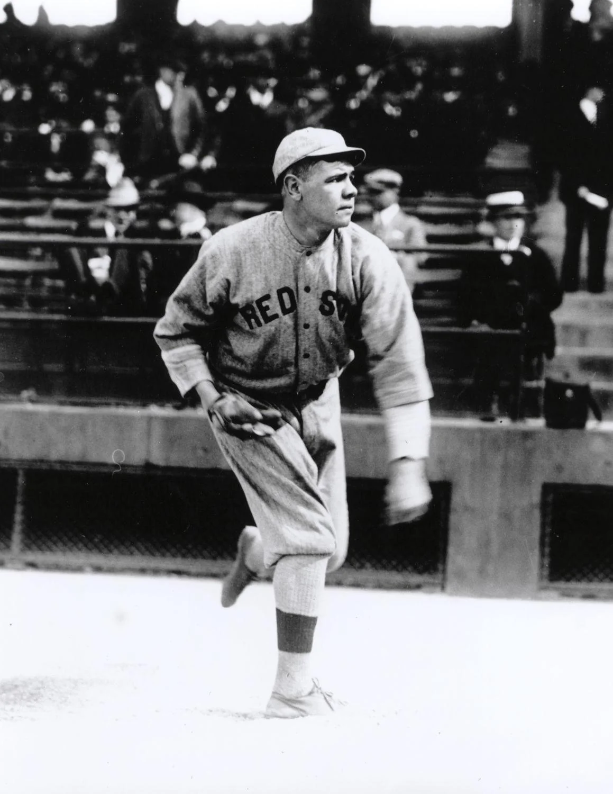

Early Life and Career Beginnings
Babe Ruth, born George Herman Ruth Jr. on February 6, 1895, in Baltimore, Maryland, is widely regarded as one of the greatest baseball players of all time. Ruth's journey to baseball stardom began at St. Mary's Industrial School for Boys, where he developed his love for the game. After a brief stint in the minor leagues, Ruth made his Major League debut with the Boston Red Sox in 1914.
Major League Debut and Rise to Stardom
Babe Ruth's career took off when he was traded to the New York Yankees in 1919. His incredible hitting ability and larger-than-life personality quickly made him a fan favorite. Ruth's home runs captivated audiences and helped popularize baseball during the Roaring Twenties. He played a pivotal role in leading the Yankees to four World Series championships (1923, 1927, 1928, and 1932).
Career Highlights and Achievements
Throughout his legendary career, Babe Ruth set numerous records and achieved remarkable milestones. He was a 12-time All-Star, won seven World Series titles, and was a two-time American League MVP. Ruth's iconic status is cemented by his remarkable home run record, which stood for decades. His impact on the game and his enduring legacy continue to be celebrated by fans and historians alike.
 Learn more about Babe Ruth